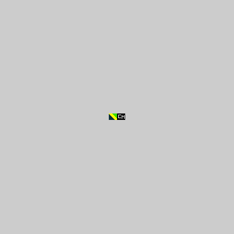

Favicon's are small images usually square that are used to immediately identify popular brands or apps. They are unique becasue they are most often found in the web browser so they constantly remind users of the site creating a unique branding effect. Usually displayed before the URL in the address bar of a browser, these pixelated images are also next to the site name in a users list of bookmarks, feature on the company site, and appeer in most correspondece from organization. More specifically favicons are a brands or website logo reduced to size 16 x 16 pixels or a comparitive size.
To make websites stand out, coders added a small icons next to each website in the favorites list; a 16 x 16px image that could help users differentiate one website from another. The name favicon, combines “favorite”and “icon.” Developer Bharat Shyam at Microsoft is credited with this idea.
To create to Favicon for this site I used a 24x11 rectancle along with 5 colors. I selected each color before hand to have the hexadecimal number present then designed and logo based on the my own prefrence.
My icon looks like a hexadecimal. Take a look.
1C 0B 18 FFFF00 FFFF00 FFFF00 FFFF00 FFFF00 FFFF00 3ADF00 3ADF00 3ADF00 3ADF00 3ADF00 3ADF00 3ADF00 3ADF00 000000 000000 000000 000000 000000 000000 000000 000000 000000 000000 000000 000000 000000 000000 0B2F3A FFFF00 FFFF00 FFFF00 FFFF00 FFFF00 FFFF00 3ADF00 3ADF00 3ADF00 3ADF00 3ADF00 3ADF00 3ADF00 000000 000000 000000 000000 000000 000000 000000 000000 000000 000000 000000 000000 000000 000000 0B2F3A 0B2F3A FFFF00 FFFF00 FFFF00 FFFF00 FFFF00 FFFF00 3ADF00 3ADF00 3ADF00 3ADF00 3ADF00 3ADF00 000000 000000 FFFFFF FFFFFF FFFFFF FFFFFF FFFFFF 000000 000000 000000 000000 000000 000000 000000 0B2F3A 0B2F3A 0B2F3A FFFF00 FFFF00 FFFF00 FFFF00 FFFF00 FFFF00 3ADF00 3ADF00 3ADF00 3ADF00 3ADF00 000000 000000 FFFFFF 000000 000000 000000 000000 000000 FFFFFF 000000 000000 000000 FFFFFF 000000 0B2F3A 0B2F3A 0B2F3A 0B2F3A FFFF00 FFFF00 FFFF00 FFFF00 FFFF00 FFFF00 3ADF00 3ADF00 3ADF00 3ADF00 000000 000000 FFFFFF 000000 000000 000000 000000 000000 FFFFFF FFFFFF 000000 FFFFFF FFFFFF 000000 0B2F3A 0B2F3A 0B2F3A 0B2F3A 0B2F3A FFFF00 FFFF00 FFFF00 FFFF00 FFFF00 FFFF00 3ADF00 3ADF00 3ADF00 000000 000000 FFFFFF 000000 000000 000000 000000 000000 FFFFFF 000000 FFFFFF 000000 FFFFFF 000000 0B2F3A 0B2F3A 0B2F3A 0B2F3A 0B2F3A 0B2F3A FFFF00 FFFF00 FFFF00 FFFF00 FFFF00 FFFF00 3ADF00 3ADF00 000000 000000 FFFFFF 000000 000000 000000 000000 000000 FFFFFF 000000 000000 000000 FFFFFF 000000 0B2F3A 0B2F3A 0B2F3A 0B2F3A 0B2F3A 0B2F3A 0B2F3A FFFF00 FFFF00 FFFF00 FFFF00 FFFF00 FFFF00 3ADF00 000000 000000 FFFFFF FFFFFF FFFFFF FFFFFF FFFFFF 000000 FFFFFF 000000 000000 000000 FFFFFF 000000 0B2F3A 0B2F3A 0B2F3A 0B2F3A 0B2F3A 0B2F3A 0B2F3A 0B2F3A FFFF00 FFFF00 FFFF00 FFFF00 FFFF00 FFFF00 000000 000000 000000 000000 000000 000000 000000 000000 FFFFFF 000000 000000 000000 FFFFFF 000000 0B2F3A 0B2F3A 0B2F3A 0B2F3A 0B2F3A 0B2F3A 0B2F3A 0B2F3A 0B2F3A FFFF00 FFFF00 FFFF00 FFFF00 FFFF00 000000 000000 000000 000000 000000 000000 000000 000000 000000 000000 000000 000000 000000 000000 0B2F3A0B2F3A0B2F3A0B2F3A0B2F3A0B2F3A0B2F3A0B2F3A0B2F3A0B2F3AFFFF00FFFF00FFFF00FFFF00000000000000000000000000000000000000000000000000000000000000000000000000000000000000
My favicon
{kind=link}